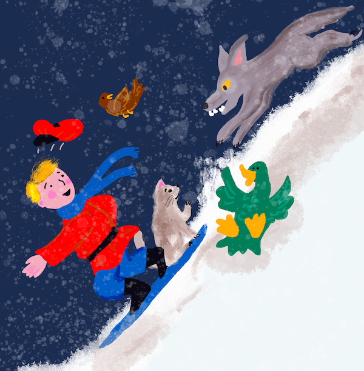
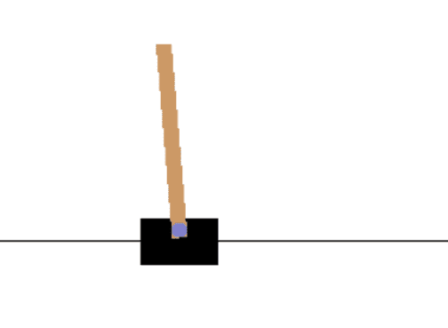
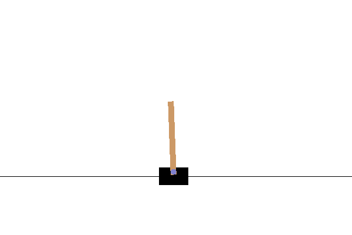
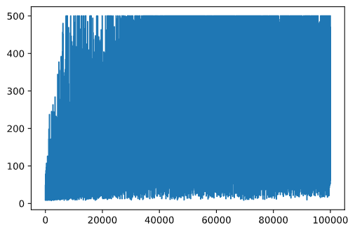
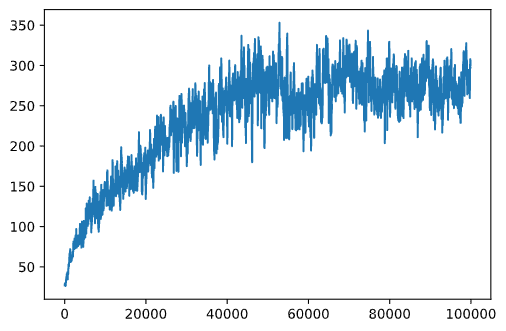

CartPole Skating⚓︎
The problem we have been solving in the previous lesson might seem like a toy problem, not really applicable for real life scenarios. This is not the case, because many real world problems also share this scenario - including playing Chess or Go. They are similar, because we also have a board with given rules and a discrete state.
Pre-lecture quiz⚓︎
Introduction⚓︎
In this lesson we will apply the same principles of Q-Learning to a problem with continuous state, i.e. a state that is given by one or more real numbers. We will deal with the following problem:
Problem: If Peter wants to escape from the wolf, he needs to be able to move faster. We will see how Peter can learn to skate, in particular, to keep balance, using Q-Learning.

Peter and his friends get creative to escape the wolf! Image by Jen Looper
We will use a simplified version of balancing known as a CartPole problem. In the cartpole world, we have a horizontal slider that can move left or right, and the goal is to balance a vertical pole on top of the slider.

Prerequisites⚓︎
In this lesson, we will be using a library called OpenAI Gym to simulate different environments. You can run this lesson's code locally (eg. from Visual Studio Code), in which case the simulation will open in a new window. When running the code online, you may need to make some tweaks to the code, as described here.
OpenAI Gym⚓︎
In the previous lesson, the rules of the game and the state were given by the Board class which we defined ourselves. Here we will use a special simulation environment, which will simulate the physics behind the balancing pole. One of the most popular simulation environments for training reinforcement learning algorithms is called a Gym, which is maintained by OpenAI. By using this gym we can create difference environments from a cartpole simulation to Atari games.
Note: You can see other environments available from OpenAI Gym here.
First, let's install the gym and import required libraries (code block 1):
import sys
!{sys.executable} -m pip install gym
import gym
import matplotlib.pyplot as plt
import numpy as np
import random
Exercise - initialize a cartpole environment⚓︎
To work with a cartpole balancing problem, we need to initialize corresponding environment. Each environment is associated with an:
-
Observation space that defines the structure of information that we receive from the environment. For cartpole problem, we receive position of the pole, velocity and some other values.
-
Action space that defines possible actions. In our case the action space is discrete, and consists of two actions - left and right. (code block 2)
-
To initialize, type the following code:
env = gym.make("CartPole-v1") print(env.action_space) print(env.observation_space) print(env.action_space.sample())
To see how the environment works, let's run a short simulation for 100 steps. At each step, we provide one of the actions to be taken - in this simulation we just randomly select an action from action_space.
-
Run the code below and see what it leads to.
✅ Remember that it is preferred to run this code on local Python installation! (code block 3)
env.reset() for i in range(100): env.render() env.step(env.action_space.sample()) env.close()You should be seeing something similar to this image:

-
During simulation, we need to get observations in order to decide how to act. In fact, the step function returns current observations, a reward function, and the done flag that indicates whether it makes sense to continue the simulation or not: (code block 4)
env.reset() done = False while not done: env.render() obs, rew, done, info = env.step(env.action_space.sample()) print(f"{obs} -> {rew}") env.close()You will end up seeing something like this in the notebook output:
[ 0.03403272 -0.24301182 0.02669811 0.2895829 ] -> 1.0 [ 0.02917248 -0.04828055 0.03248977 0.00543839] -> 1.0 [ 0.02820687 0.14636075 0.03259854 -0.27681916] -> 1.0 [ 0.03113408 0.34100283 0.02706215 -0.55904489] -> 1.0 [ 0.03795414 0.53573468 0.01588125 -0.84308041] -> 1.0 ... [ 0.17299878 0.15868546 -0.20754175 -0.55975453] -> 1.0 [ 0.17617249 0.35602306 -0.21873684 -0.90998894] -> 1.0The observation vector that is returned at each step of the simulation contains the following values: - Position of cart - Velocity of cart - Angle of pole - Rotation rate of pole
-
Get min and max value of those numbers: (code block 5)
print(env.observation_space.low) print(env.observation_space.high)You may also notice that reward value on each simulation step is always 1. This is because our goal is to survive as long as possible, i.e. keep the pole to a reasonably vertical position for the longest period of time.
✅ In fact, the CartPole simulation is considered solved if we manage to get the average reward of 195 over 100 consecutive trials.
State discretization⚓︎
In Q-Learning, we need to build Q-Table that defines what to do at each state. To be able to do this, we need state to be discreet, more precisely, it should contain finite number of discrete values. Thus, we need somehow to discretize our observations, mapping them to a finite set of states.
There are a few ways we can do this:
- Divide into bins. If we know the interval of a certain value, we can divide this interval into a number of bins, and then replace the value by the bin number that it belongs to. This can be done using the numpy
digitizemethod. In this case, we will precisely know the state size, because it will depend on the number of bins we select for digitalization.
✅ We can use linear interpolation to bring values to some finite interval (say, from -20 to 20), and then convert numbers to integers by rounding them. This gives us a bit less control on the size of the state, especially if we do not know the exact ranges of input values. For example, in our case 2 out of 4 values do not have upper/lower bounds on their values, which may result in the infinite number of states.
In our example, we will go with the second approach. As you may notice later, despite undefined upper/lower bounds, those value rarely take values outside of certain finite intervals, thus those states with extreme values will be very rare.
-
Here is the function that will take the observation from our model and produce a tuple of 4 integer values: (code block 6)
def discretize(x): return tuple((x/np.array([0.25, 0.25, 0.01, 0.1])).astype(np.int)) -
Let's also explore another discretization method using bins: (code block 7)
def create_bins(i,num): return np.arange(num+1)*(i[1]-i[0])/num+i[0] print("Sample bins for interval (-5,5) with 10 bins\n",create_bins((-5,5),10)) ints = [(-5,5),(-2,2),(-0.5,0.5),(-2,2)] # intervals of values for each parameter nbins = [20,20,10,10] # number of bins for each parameter bins = [create_bins(ints[i],nbins[i]) for i in range(4)] def discretize_bins(x): return tuple(np.digitize(x[i],bins[i]) for i in range(4)) -
Let's now run a short simulation and observe those discrete environment values. Feel free to try both
discretizeanddiscretize_binsand see if there is a difference.✅ discretize_bins returns the bin number, which is 0-based. Thus for values of input variable around 0 it returns the number from the middle of the interval (10). In discretize, we did not care about the range of output values, allowing them to be negative, thus the state values are not shifted, and 0 corresponds to 0. (code block 8)
env.reset() done = False while not done: #env.render() obs, rew, done, info = env.step(env.action_space.sample()) #print(discretize_bins(obs)) print(discretize(obs)) env.close()✅ Uncomment the line starting with env.render if you want to see how the environment executes. Otherwise you can execute it in the background, which is faster. We will use this "invisible" execution during our Q-Learning process.
The Q-Table structure⚓︎
In our previous lesson, the state was a simple pair of numbers from 0 to 8, and thus it was convenient to represent Q-Table by a numpy tensor with a shape of 8x8x2. If we use bins discretization, the size of our state vector is also known, so we can use the same approach and represent state by an array of shape 20x20x10x10x2 (here 2 is the dimension of action space, and first dimensions correspond to the number of bins we have selected to use for each of the parameters in observation space).
However, sometimes precise dimensions of the observation space are not known. In case of the discretize function, we may never be sure that our state stays within certain limits, because some of the original values are not bound. Thus, we will use a slightly different approach and represent Q-Table by a dictionary.
-
Use the pair (state,action) as the dictionary key, and the value would correspond to Q-Table entry value. (code block 9)
Q = {} actions = (0,1) def qvalues(state): return [Q.get((state,a),0) for a in actions]Here we also define a function
qvalues(), which returns a list of Q-Table values for a given state that corresponds to all possible actions. If the entry is not present in the Q-Table, we will return 0 as the default.
Let's start Q-Learning⚓︎
Now we are ready to teach Peter to balance!
-
First, let's set some hyperparameters: (code block 10)
# hyperparameters alpha = 0.3 gamma = 0.9 epsilon = 0.90Here,
alphais the learning rate that defines to which extent we should adjust the current values of Q-Table at each step. In the previous lesson we started with 1, and then decreasedalphato lower values during training. In this example we will keep it constant just for simplicity, and you can experiment with adjustingalphavalues later.gammais the discount factor that shows to which extent we should prioritize future reward over current reward.epsilonis the exploration/exploitation factor that determines whether we should prefer exploration to exploitation or vice versa. In our algorithm, we will inepsilonpercent of the cases select the next action according to Q-Table values, and in the remaining number of cases we will execute a random action. This will allow us to explore areas of the search space that we have never seen before.✅ In terms of balancing - choosing random action (exploration) would act as a random punch in the wrong direction, and the pole would have to learn how to recover the balance from those "mistakes"
Improve the algorithm⚓︎
We can also make two improvements to our algorithm from the previous lesson:
-
Calculate average cumulative reward, over a number of simulations. We will print the progress each 5000 iterations, and we will average out our cumulative reward over that period of time. It means that if we get more than 195 point - we can consider the problem solved, with even higher quality than required.
-
Calculate maximum average cumulative result,
Qmax, and we will store the Q-Table corresponding to that result. When you run the training you will notice that sometimes the average cumulative result starts to drop, and we want to keep the values of Q-Table that correspond to the best model observed during training. -
Collect all cumulative rewards at each simulation at
rewardsvector for further plotting. (code block 11)def probs(v,eps=1e-4): v = v-v.min()+eps v = v/v.sum() return v Qmax = 0 cum_rewards = [] rewards = [] for epoch in range(100000): obs = env.reset() done = False cum_reward=0 # == do the simulation == while not done: s = discretize(obs) if random.random()<epsilon: # exploitation - chose the action according to Q-Table probabilities v = probs(np.array(qvalues(s))) a = random.choices(actions,weights=v)[0] else: # exploration - randomly chose the action a = np.random.randint(env.action_space.n) obs, rew, done, info = env.step(a) cum_reward+=rew ns = discretize(obs) Q[(s,a)] = (1 - alpha) * Q.get((s,a),0) + alpha * (rew + gamma * max(qvalues(ns))) cum_rewards.append(cum_reward) rewards.append(cum_reward) # == Periodically print results and calculate average reward == if epoch%5000==0: print(f"{epoch}: {np.average(cum_rewards)}, alpha={alpha}, epsilon={epsilon}") if np.average(cum_rewards) > Qmax: Qmax = np.average(cum_rewards) Qbest = Q cum_rewards=[]
What you may notice from those results:
-
Close to our goal. We are very close to achieving the goal of getting 195 cumulative rewards over 100+ consecutive runs of the simulation, or we may have actually achieved it! Even if we get smaller numbers, we still do not know, because we average over 5000 runs, and only 100 runs is required in the formal criteria.
-
Reward starts to drop. Sometimes the reward start to drop, which means that we can "destroy" already learnt values in the Q-Table with the ones that make the situation worse.
This observation is more clearly visible if we plot training progress.
Plotting Training Progress⚓︎
During training, we have collected the cumulative reward value at each of the iterations into rewards vector. Here is how it looks when we plot it against the iteration number:
plt.plot(rewards)

From this graph, it is not possible to tell anything, because due to the nature of stochastic training process the length of training sessions varies greatly. To make more sense of this graph, we can calculate the running average over a series of experiments, let's say 100. This can be done conveniently using np.convolve: (code block 12)
def running_average(x,window):
return np.convolve(x,np.ones(window)/window,mode='valid')
plt.plot(running_average(rewards,100))

Varying hyperparameters⚓︎
To make learning more stable, it makes sense to adjust some of our hyperparameters during training. In particular:
-
For learning rate,
alpha, we may start with values close to 1, and then keep decreasing the parameter. With time, we will be getting good probability values in the Q-Table, and thus we should be adjusting them slightly, and not overwriting completely with new values. -
Increase epsilon. We may want to increase the
epsilonslowly, in order to explore less and exploit more. It probably makes sense to start with lower value ofepsilon, and move up to almost 1.
Task 1: Play with hyperparameter values and see if you can achieve higher cumulative reward. Are you getting above 195?
Task 2: To formally solve the problem, you need to get 195 average reward across 100 consecutive runs. Measure that during training and make sure that you have formally solved the problem!
Seeing the result in action⚓︎
It would be interesting to actually see how the trained model behaves. Let's run the simulation and follow the same action selection strategy as during training, sampling according to the probability distribution in Q-Table: (code block 13)
obs = env.reset()
done = False
while not done:
s = discretize(obs)
env.render()
v = probs(np.array(qvalues(s)))
a = random.choices(actions,weights=v)[0]
obs,_,done,_ = env.step(a)
env.close()
You should see something like this:

🚀Challenge⚓︎
Task 3: Here, we were using the final copy of Q-Table, which may not be the best one. Remember that we have stored the best-performing Q-Table into
Qbestvariable! Try the same example with the best-performing Q-Table by copyingQbestover toQand see if you notice the difference.Task 4: Here we were not selecting the best action on each step, but rather sampling with corresponding probability distribution. Would it make more sense to always select the best action, with the highest Q-Table value? This can be done by using
np.argmaxfunction to find out the action number corresponding to highers Q-Table value. Implement this strategy and see if it improves the balancing.
Post-lecture quiz⚓︎
Assignment⚓︎
Conclusion⚓︎
We have now learned how to train agents to achieve good results just by providing them a reward function that defines the desired state of the game, and by giving them an opportunity to intelligently explore the search space. We have successfully applied the Q-Learning algorithm in the cases of discrete and continuous environments, but with discrete actions.
It's important to also study situations where action state is also continuous, and when observation space is much more complex, such as the image from the Atari game screen. In those problems we often need to use more powerful machine learning techniques, such as neural networks, in order to achieve good results. Those more advanced topics are the subject of our forthcoming more advanced AI course.
创建日期: November 22, 2023